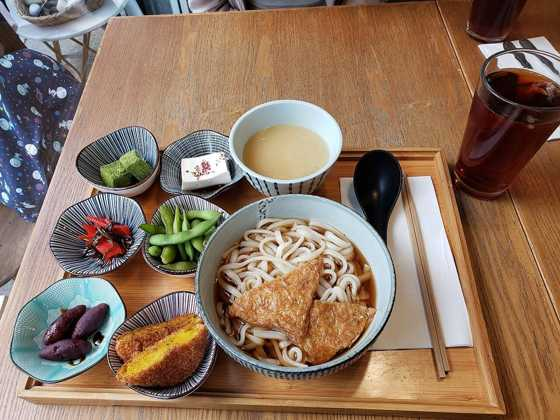
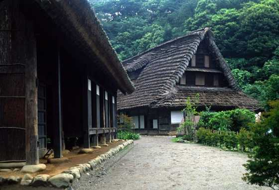
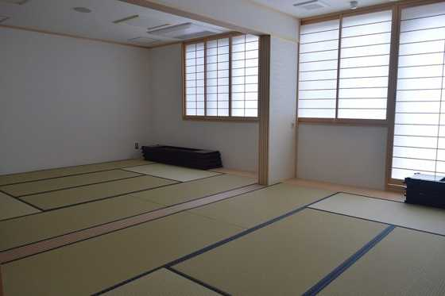
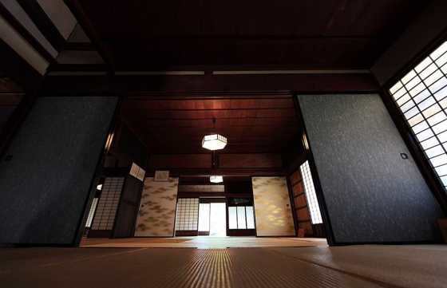
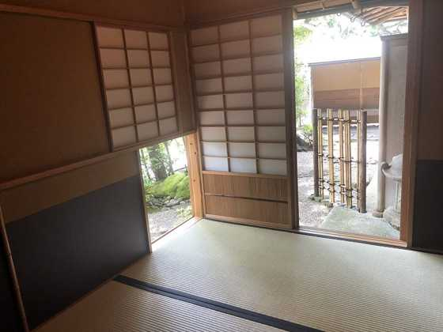
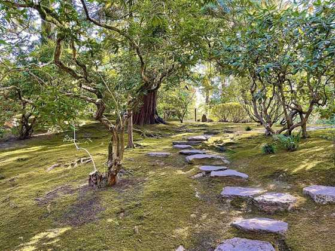
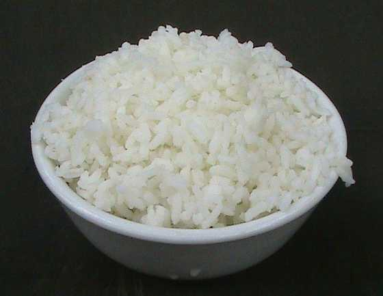
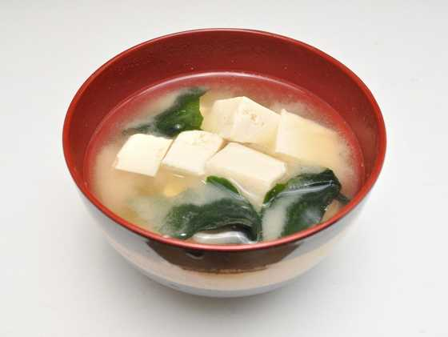
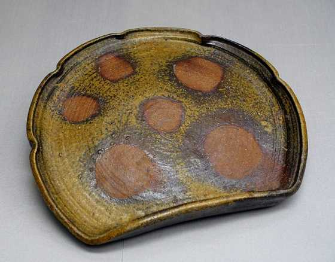
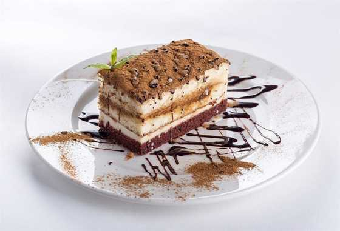

ふるさと御膳
おかず5種・サラダ・フルーツ・汁物・ご飯。880円
実家の座敷で、少しずつたくさんの手料理を。
吉良川のまちなみの奥の、ゆっくりランチ。

写真: Fg2 「Kawasaki Nihon Minkaen-3.jpg」 / パブリックドメイン(撮影地: 日本)・縮小加工 / 出典
多だ屋は、店主の実家である「多田家」の武家屋敷の一部を改装して開いた喫茶店です。店名は、全部漢字の「多田屋」では堅い印象になるため、「だ」だけをひらがなにしたと紹介されています。
店主は子どもの頃から料理が好きで、社宅寮の食堂係の経験を生かして開店。「自分が食べたいランチ」として、少しずつ多くのおかずが並ぶスタイルを考えたそうです。店内は全席お座敷で、手作りの装飾品が飾られています。
※ 上記は、地元情報サイトの紹介記事(2025年12月公開)などで確認できた内容です。

写真: Asturio Cantabrio 「Nukata Center Japanese-style room.jpg」 / CC BY-SA 4.0(撮影地: 日本)・縮小加工 / 出典

写真: TANAKA Juuyoh(田中十洋) 「Interior of a traditional Japanese house.jpg」 / CC BY 2.0(撮影地: 日本)・縮小加工 / 出典

写真: Miya 「Shinsei-en Chashitsu Koma.jpg」 / CC BY-SA 4.0(撮影地: 日本)・縮小加工 / 出典

写真: Vulturesong 「Portland Japanese Garden 008.jpg」 / CC0(撮影地: 米国(オレゴン州))・縮小加工 / 出典

写真: Anna Frodesiak 「Steamed rice in bowl 01.jpg」 / CC0(撮影地: 不明)・縮小加工 / 出典


写真: Commons利用者 「Bowl with upturned rim, Bizen ware, Edo period(東京国立博物館所蔵)」 / CC0(撮影地: 日本(東京))・縮小加工

写真: Daria Yakovleva 「Piece of chocolate cake on a white plate decorated with chocolate sauce.jpg」 / CC0(撮影地: 不明)・縮小加工 / 出典
以下は制作側で作成したイメージ例で、実在のお客様の声ではありません。
座敷に上がると、ふっと肩の力が抜けました。おかずが少しずつ並んでいて、どれから食べるか迷うのも楽しいです。
町並みを歩いたあとの、ゆっくりしたお昼にぴったり。やさしい味つけで、最後まで気持ちよく食べられました。
ゆずジュースとケーキで一息。古い家の静けさの中で、時間を気にせず過ごせました。
写真はすべてフリー素材(Wikimedia Commons)のイメージで、店舗の実際の様子ではありません。各写真の作者・ライセンスは写真の下に記載しています。ライセンスの詳細は creativecommons.org をご覧ください。写真は縮小加工しています。
掲載写真はフリー素材のイメージで、店舗の実際の様子ではありません。